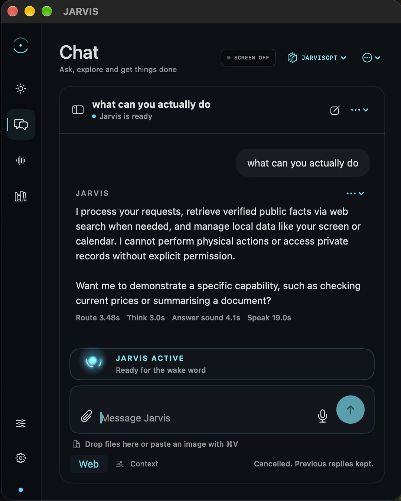

Python
Command-line applications, object-oriented programming and JSON storage.
I’m studying computer science and building personal projects, from Python tools to a voice assistant. You can explore them below.
Currently working on JARVIS, a voice-led macOS assistant
I’m interested in how software works and how people use it. My projects range from command-line tools and desktop applications to cloud storage. I also enjoy building and maintaining PCs.
Alongside my computer science studies, I test voice agents, review calls and help refine their behaviour. My background also includes retail experience, a Certificate III and a Diploma of Business.
View CVCommand-line applications, object-oriented programming and JSON storage.
HTML, CSS and JavaScript for responsive websites and browser interfaces.
S3 storage, IAM permissions, encryption and access-control testing.
Test cases, edge cases, production call analysis and regression testing.
Investigating agent behaviour, refining prompts and checking changes in staging.
Building, maintaining and troubleshooting desktop computers.
Try the troubleshooting game ↗Select a project to open it. Select it again to close.
Personal project · macOS · In development
JARVIS is a macOS assistant prototype built to connect conversation with practical actions. Chat runs on a free, on-device Qwen model. You can speak to it and hear spoken replies, search saved conversations, turn meeting audio into transcripts and notes, ask questions about a file you choose, or inspect your screen when needed. It can also search the public web, set reminders and use supported Mac apps through reviewed actions.
The longer-term aim is a voice-led desktop assistant that understands what you’re working on and can take on useful, carefully scoped tasks across your Mac. That broader capability is still being developed: voice reliability, response speed, memory use and app control need more work. Web searches use external services, and screen or app access depends on macOS permissions.
VOICE INTERFACE
Choose a state to see how JARVIS signals what it’s doing.
Ready when you need meJARVIS is waiting for the wake word.

File transfer illustration · Web demo setup in progress
University project · AWS S3 & IAM
An AWS file storage project built for CST230. It uses S3, encryption and IAM permissions to control file access. A web interface for sign-in, uploads and downloads is in development.
Open storage projectEarlier project · Development paused
A desktop application combining a local AI assistant, file management, system monitoring and task automation. The video shows an earlier version of the project.
Python · JSON storage
A Python command-line application for organising tasks by category, due date and priority. It uses object-oriented design and JSON storage to retain tasks between sessions.
A little hardware troubleshooting
Case 1 of 6
Pick the part you’d check first. No actual PCs were harmed.
NO SIGNAL
Is this thing on?Loading the test bench…
The symptoms
The monitor cable is connected to the graphics card and the correct input is selected. The motherboard’s white VGA light stays on.
What would you check first?
Select a component in the PC or use the buttons.
First-try fixes: 0 / 0
A simplified game, not a diagnosis tool. LED meanings depend on the motherboard; these cases use labelled DRAM and VGA indicators. Indicator reference ↗